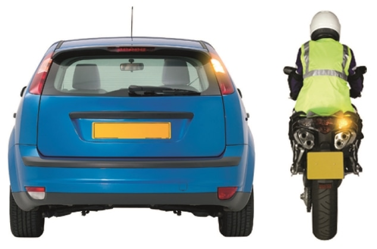
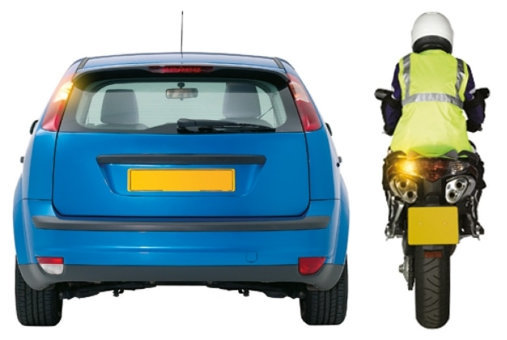
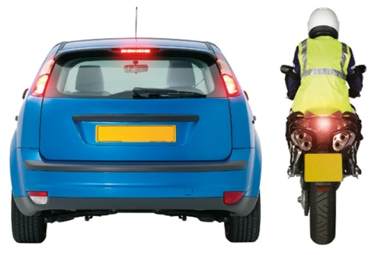
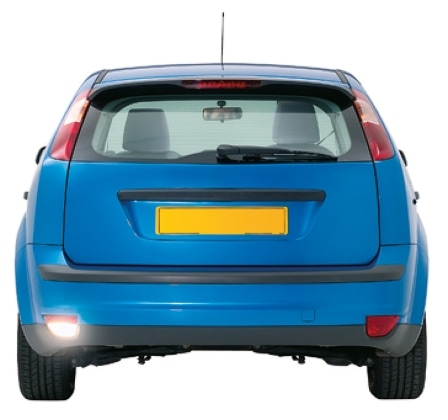
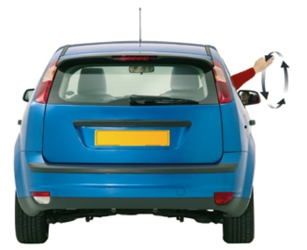
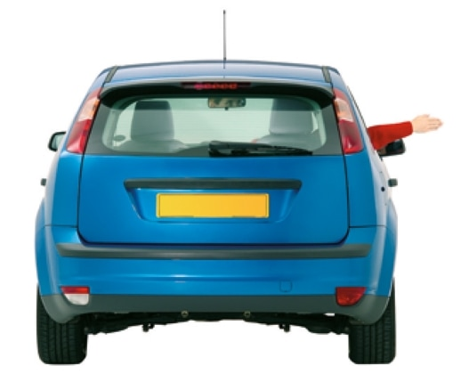
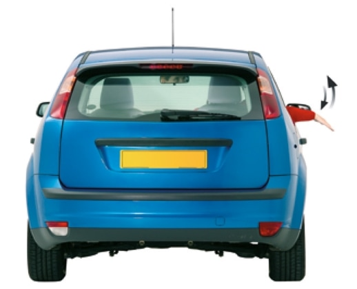
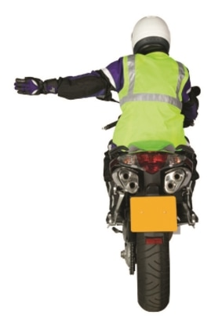
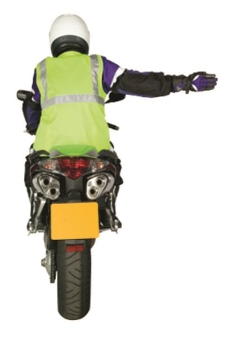
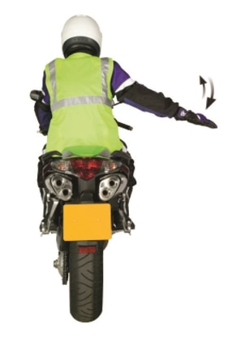

Signs and Signals > Signals to other road users
Signals used to other road users, including direction indicator signals, brake light signals, reversing light signals and arm signals.
Direction indicator signals

I intend to move out to the right or turn right

I intend to move in to the left or turn left or stop on the left
These signals should not be used except for the purpose described.
Brake light signals

I am applying the brakes
This signal should not be used except for the purpose described.
Reversing light signals

I intend to reverse
This signal should not be used except for the purpose described.
Arm signals
For use when direction indicator signals are not used, or when necessary to reinforce direction indicator signals and stop lights. Also for use by pedal cyclists and those in charge of horses.

I intend to move in to the left or turn left

I intend to move out to the right or turn right

I intend to slow down or stop

I intend to move in to the left or turn left

I intend to move out to the right or turn right

I intend to slow down or stop
These signals should not be used except for the purpose described.
Hazard lights
I am temporarily obstructing traffic or warning of a hazard or obstruction ahead (see Rule 116)